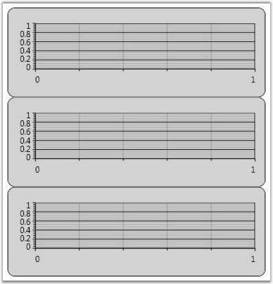
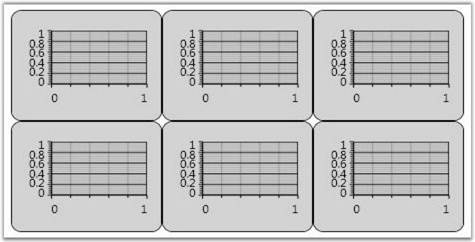
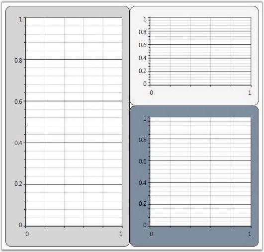

Upon adding multiple Chart Areas to Chart, you may want to customize the layout in which these multiple Chart Areas are rendered. You can do so by specifying a custom container for these Chart Areas through the AreasPanel property of the Chart control. Any container such as Grid, Stack Panel, Dock Panel, Canvas or Wrap Panel can be used.
Built-in Chart Grid
ChartGrid is the container that is used by Chart, by default, to host the Chart Areas. The following screen shot illustrates the default settings of ChartGrid in which all the Chart Areas are arranged one below the other.

Figure 72: Default Settings of Chart Grid
However, the default settings of the ChartGrid can be customized to display the Chart Areas side by side. The following code example illustrates how this can be done by using the Orientation and AutoRowsCount properties.
|
[XAML]
<sfchart:Chart> <sfchart:Chart.AreasPanel> <ItemsPanelTemplate> <sfchart:ChartGrid Orientation="Horizontal" AutoRowsCount="2"></sfchart:ChartGrid> </ItemsPanelTemplate> </sfchart:Chart.AreasPanel> </sfchart:Chart> |

Figure 73: Chart Grid with Orientation = "Horizontal" and AutoRowsCount = "2"
The ChartGrid also provides options to control the aspect ratio (number of rows / number of columns) of the layout grid. Take a look at the ChartGrid class reference for more information.
Other Panels
Also you can plug-in any kind of Panel as the container for the Chart Area. The following code example illustrates how to use a DockPanel as the Areas Panel of the Chart.
|
[XAML]
<sfchart:Chart> <sfchart:Chart.AreasPanel> <ItemsPanelTemplate> <DockPanel/> </ItemsPanelTemplate> </sfchart:Chart.AreasPanel> <sfchart:ChartArea Background="LightGray" GridBackground="White" DockPanel.Dock="Top" Height="200"> <sfchart:ChartSeries/> </sfchart:ChartArea> <sfchart:ChartArea Background="WhiteSmoke" GridBackground="White" DockPanel.Dock="Top" Height="200"> <sfchart:ChartSeries/> </sfchart:ChartArea> <sfchart:ChartArea Background="LightSlateGray" GridBackground="White" > <sfchart:ChartSeries/> </sfchart:ChartArea> </sfchart:Chart> |
|
[C#]
ChartArea area = new ChartArea(); area.Background = Brushes.LightGray; area.GridBackground = Brushes.White; Chart1.Areas.Add(area); ChartArea area1 = new ChartArea(); area1.Background = Brushes.WhiteSmoke; area1.GridBackground = Brushes.White; Chart1.Areas.Add(area1); ChartArea area2 = new ChartArea(); area2.Background = Brushes.LightSlateGray; area2.GridBackground = Brushes.White; Chart1.Areas.Add(area2); |

Figure 74: Chart Areas arranged in a DockPanel
A sample which demonstrates how to use different containers as the Areas Panel is available in the following sample installation path.
..My Documents\Syncfusion\EssentialStudio\Version Number\WPF\Chart.WPF\Samples\3.5\WindowsSamples\Chart Area\Custom Panel Demo
See Also